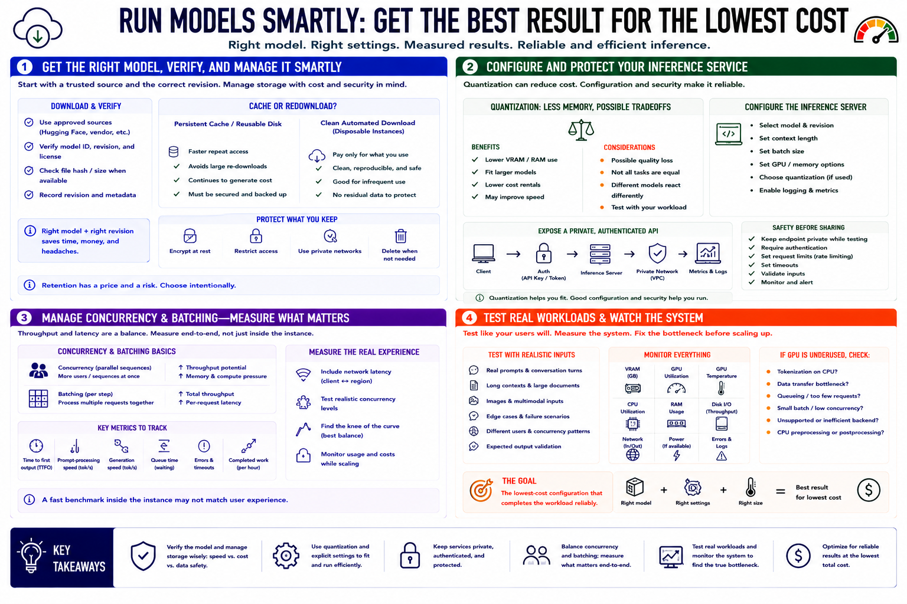

Running Models on Rented GPUs
Connecting to LMS... Progress: in progress

Narration
Download models from an approved source and verify the intended revision before spending time loading them. A persistent cache or reusable disk can reduce repeated transfers, but it continues to generate cost and must be protected. For disposable instances, consider whether a clean automated download is safer and cheaper than retaining a large cache between infrequent sessions.
Quantization reduces memory demand and may allow a model to run on a smaller rental. Evaluate the quality and speed tradeoff with the actual task. Configure an inference server with explicit model, context, batch, and GPU settings, then expose it through an authenticated API. Keep the endpoint private while testing, and apply request limits and timeouts before sharing it.
Concurrency controls simultaneous sequences and increases cache and compute pressure. Batching can improve total throughput but may delay an individual request. Measure time to first output, prompt-processing speed, generation speed, queue time, errors, and completed work per hour. Include network latency between the client and rental region. A fast benchmark inside the instance may not represent the user's end-to-end experience.
Test real prompts, context lengths, documents, images, and failure cases. Watch VRAM, GPU utilization, CPU, RAM, disk, and network while the test runs. If the accelerator remains underused, identify whether tokenization, data transfer, queueing, or an unsupported backend is responsible before renting a larger device. The goal is the lowest-cost configuration that completes the workload reliably, not the largest GPU available.